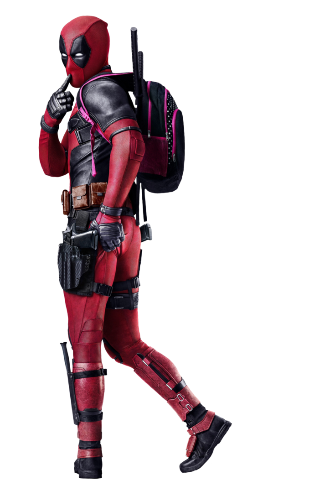
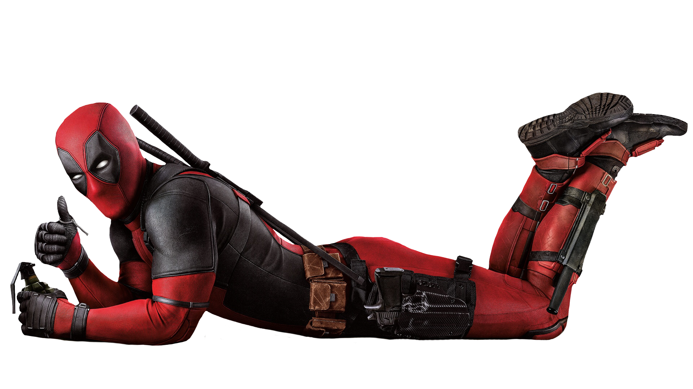

_almanaru
D
WHAT IS IT ?
Deadpool adalah sebuah film pahlawan super Amerika yang berdasarkan pada karakter Marvel Comics dengan nama yang sama. Film tersebut merupakan instalmen kedelapan dalam serial film X-Men. Film tersebut disutradarai oleh Tim Miller, dengan sebuah permainan latar buatan Rhett Reese dan Paul Wernick, dan dibintangi oleh Ryan Reynolds, Morena Baccarin, Ed Skrein, T. J. Miller, Gina Carano, Brianna Hildebrand, Andre Tricoteux, dan Leslie Uggams.
